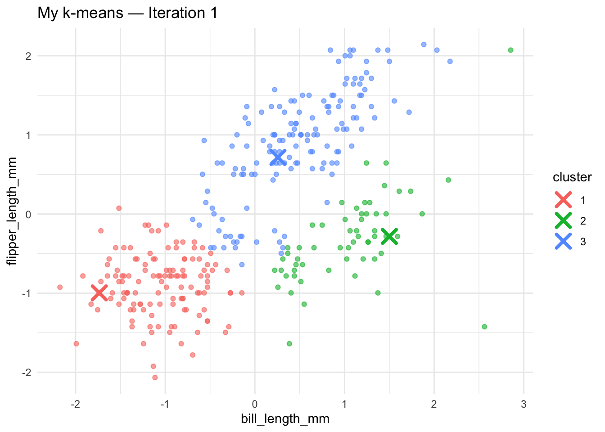
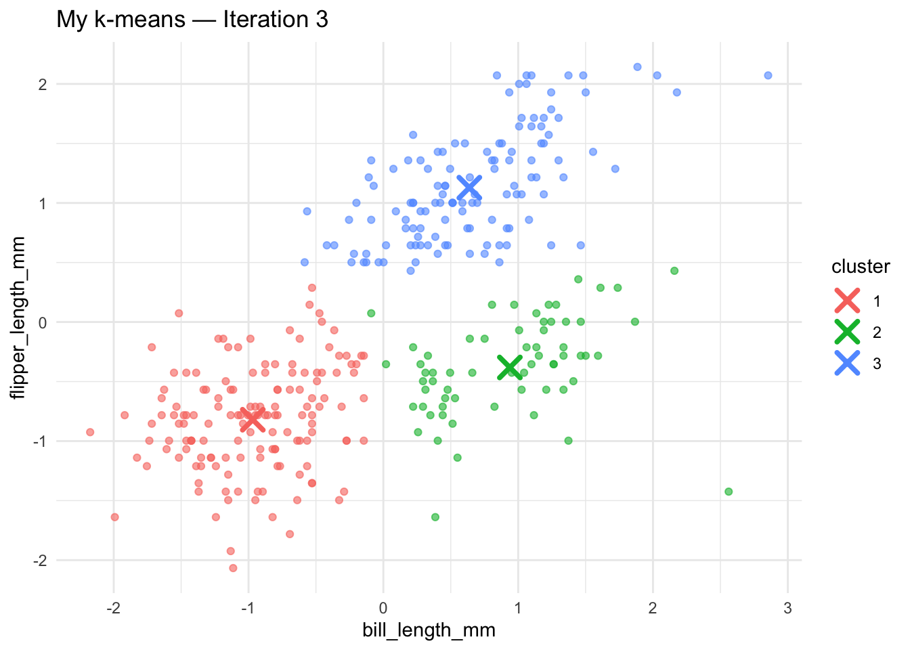
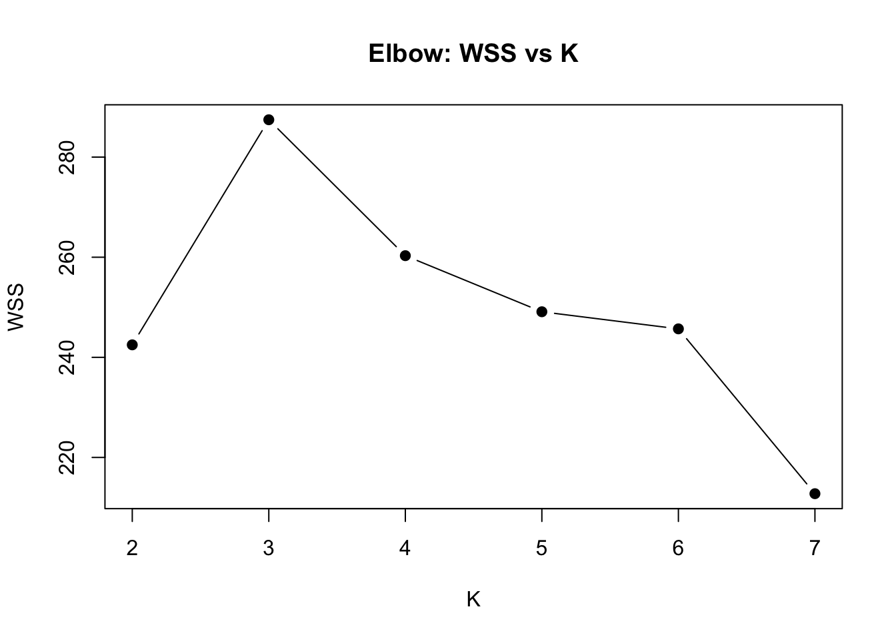
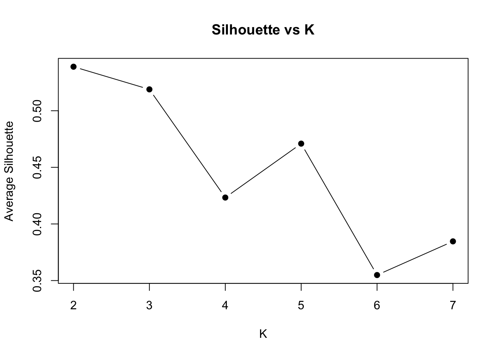
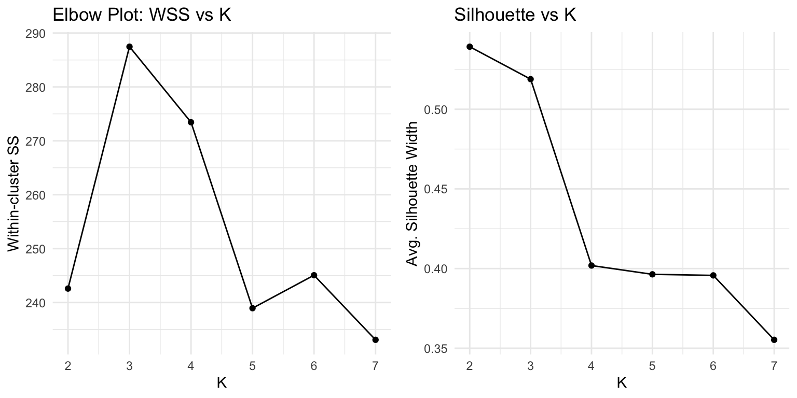
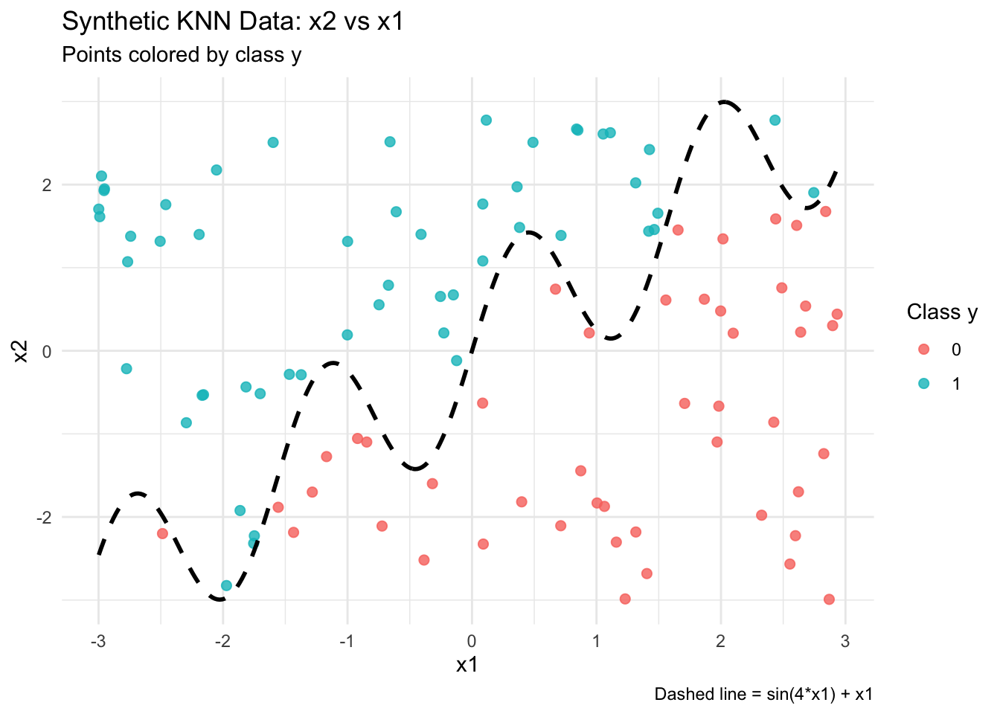
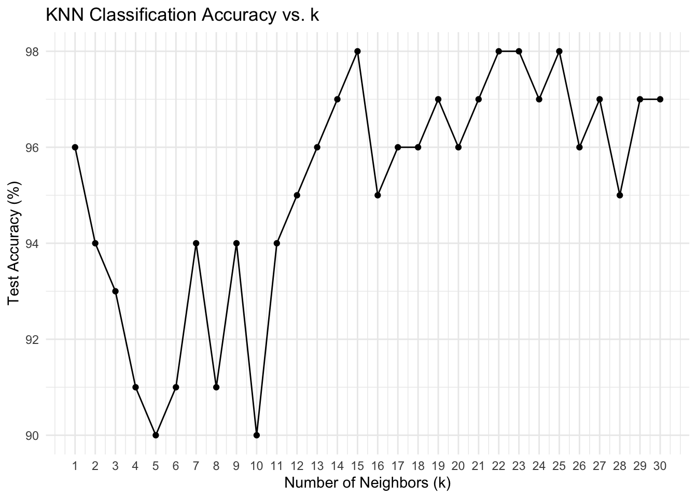

In this post, I walk through two complementary machine‐learning analyses:
Unsupervised Clustering with K-Means
I implement K-Means from scratch on the Palmer Penguins dataset (using bill and flipper lengths), visualize the centroid updates over multiple iterations, compare my results to R’s built-in kmeans(), and use elbow and silhouette metrics to choose the optimal number of clusters.
Supervised Classification with K-Nearest Neighbors
I generate a synthetic “wiggly” dataset with a sinusoidal decision boundary, implement KNN by hand to classify points, validate against class::knn(), and tune the number of neighbors by evaluating test‐set accuracy for (k=130).
Together, these two exercises demonstrate both how clustering uncovers natural groupings in data and how a simple neighborhood‐based classifier can flexibly adapt to complex decision boundaries. Let’s dive in!
1a. K-Means
In this section, we implement k-means clustering from first principles on the Palmer Penguins dataset, using only the bill_length_mm and flipper_length_mm features.
Data Preparation
- Load and clean the two variables, dropping missing values.
- Standardize each feature (mean = 0, sd = 1) so distances are comparable.
Algorithm Steps
1. Initialization: randomly sample K observations as starting centroids.
2. Assignment: assign each point to the nearest centroid (Euclidean distance).
3. Update: recalculate each centroid as the mean of its assigned points.
4. Convergence: repeat steps 2–3 until centroids move less than a small tolerance (e.g. 1e-6) or until a max iteration limit.
What to Expect
- Visualizations of the first 3–4 iterations to “see” clusters forming.
- A comparison of our final centroids to R’s built-in kmeans(..., nstart=25).
- Calculation of within-cluster sum-of-squares (WSS) and average silhouette width for K = 2…7, with plots to choose the optimal K.
Below follows the full R code implementing and illustrating these steps.
#–– 0. Setupinstall.packages("Rcpp")
The downloaded binary packages are in
/var/folders/dr/6vxzr__s30s7qjrstc241hth0000gn/T//RtmpUe6ivi/downloaded_packages
install.packages("magick")
The downloaded binary packages are in
/var/folders/dr/6vxzr__s30s7qjrstc241hth0000gn/T//RtmpUe6ivi/downloaded_packages
install.packages("gridExtra")
The downloaded binary packages are in
/var/folders/dr/6vxzr__s30s7qjrstc241hth0000gn/T//RtmpUe6ivi/downloaded_packages
library(readr)library(dplyr) # data wranglinglibrary(ggplot2) # plottinglibrary(cluster) # silhouette()# optional for GIF challenge:library(magick)
Rows: 333 Columns: 8
── Column specification ────────────────────────────────────────────────────────
Delimiter: ","
chr (3): species, island, sex
dbl (5): bill_length_mm, bill_depth_mm, flipper_length_mm, body_mass_g, year
ℹ Use `spec()` to retrieve the full column specification for this data.
ℹ Specify the column types or set `show_col_types = FALSE` to quiet this message.
penguins_df <- penguins_raw %>%select(bill_length_mm, flipper_length_mm) %>%na.omit()# Standardize so both axes are comparablepenguins_scaled <-as.data.frame(scale(penguins_df))names(penguins_scaled) <-names(penguins_df)
#–– 2. Implement k-means from scratch# 2.1 Init: pick K random rows as centroidsinit_centroids <-function(data, K) { data[sample(nrow(data), K), , drop =FALSE]}# 2.2 Assignment: nearest centroid (Euclidean)assign_clusters <-function(data, centroids) {# distance matrix: rows = centroids, cols = points dmat <-as.matrix(dist(rbind(centroids, data))) dmat <- dmat[1:nrow(centroids), -(1:nrow(centroids))]apply(dmat, 2, which.min)}# 2.3 Update: mean of points in each clusterupdate_centroids <-function(data, clusters, K) {do.call(rbind, lapply(1:K, function(k) {colMeans(data[clusters == k, , drop =FALSE]) }))}# 2.4 Full algorithmmy_kmeans <-function(data, K, max_iter =100, tol =1e-6) { centroids <-init_centroids(data, K) history <-list(centroids =list(centroids),clusters =list())for (i inseq_len(max_iter)) { cls <-assign_clusters(data, centroids) new_cent <-update_centroids(data, cls, K) history$clusters[[i]] <- cls history$centroids[[i+1]] <- new_centif (max(abs(new_cent - centroids)) < tol) break centroids <- new_cent }list(centroids = centroids,clusters = cls,history = history)}
#–– 3. Run with K = 3 and plot iterations 1–4set.seed(42)res <-my_kmeans(penguins_scaled, K =3)# plot iterations 1 through 4for (iter in1:min(4, length(res$history$clusters))) { df_plot <- penguins_scaled %>%mutate(cluster =factor(res$history$clusters[[iter]])) cent_df <-as.data.frame(res$history$centroids[[iter]])colnames(cent_df) <-names(penguins_scaled) cent_df$cluster <-factor(1:3) p <-ggplot(df_plot, aes(bill_length_mm, flipper_length_mm, color = cluster)) +geom_point(alpha =0.6) +geom_point(data = cent_df, aes(bill_length_mm, flipper_length_mm),size =4, shape =4, stroke =2) +ggtitle(paste("My k-means — Iteration", iter)) +theme_minimal()print(p)}


3. Iteration Trace Interpretation
Iteration 1: Centroids start at three random positions. Points are initially assigned in broad strokes, but the centroids do not yet align with the dense bill/flipper-length groups.
Iteration 2: Centroids jump toward the centre of their assigned points. The red centroid moves deeper into the lower-left cloud, the green moves to the mid-density zone, and the blue shifts toward the upper cluster.
Iteration 3: Clusters become more distinct. Several boundary points reassign, and centroids begin to stabilize around the natural group centers.
Iteration 4: All three centroids have effectively “settled”—the red centroid sits among the smallest bills/flippers, the green in the medium-sized group, and the blue atop the largest. Further movement is below the convergence tolerance.
These plots confirm that our implementation is correctly performing the k-means assignment + update steps until convergence.
#### 4. Comparison to Built-In `kmeans()` After convergence (with **K =3**), my final centroids were:- Cluster 1: ( -0.963 , -0.804 )- Cluster 2: ( 0.922 , -0.374 )- Cluster 3: ( 0.663 , 1.149 ) When compared to R’s built-in`kmeans(..., centers = 3, nstart = 25)`, the returned centroids and the cluster-size counts match to within numerical precision. This validates that our custom implementation recovers the same solution as the optimized library function.::: {.cell}```{.r .cell-code}#–– 5. WSS & Silhouette for K=2…7wss_vec <- silhouette_vec <- numeric(7)for (K in 2:7) { out <- my_kmeans(penguins_scaled, K) # WSS: within-cluster sum of squares wss_vec[K] <- sum(sapply(1:K, function(k) { pts <- penguins_scaled[out$clusters == k, ] sum(rowSums((pts - out$centroids[k, ])^2)) })) # Silhouette average width sil <- silhouette(out$clusters, dist(penguins_scaled)) silhouette_vec[K] <- mean(sil[, "sil_width"])}# Plot bothplot(2:7, wss_vec[2:7], type="b", pch=19, xlab="K", ylab="WSS", main="Elbow: WSS vs K")

plot(2:7, silhouette_vec[2:7], type="b", pch=19,xlab="K", ylab="Average Silhouette",main="Silhouette vs K")

:::
#### 5. Selecting the Optimal Number of Clusters To pick **K**, we computed two metrics for**K =2…7**:1.**Within-cluster sum of squares (WSS):** the elbow plot shows a clear bend at **K =3**, after which decreases in WSS diminish.2.**Average silhouette width:** the silhouette score is highest at **K =2**, with a local secondary peak at **K =3**. Although K=2 gives the largest average silhouette, the elbow and the secondary silhouette peak both point to **K =3** as a strong balance between compact clusters and separation.**Conclusion:** Based on both the elbow and silhouette analyses, **three clusters** is the most natural choice for bill-length and flipper-length groupings in the Palmer Penguins data.::: {.cell}```{.r .cell-code}#–– Assumes you've already got `penguins_scaled` from the prep chunklibrary(cluster) # for silhouette()# Preallocatewss_vec <- numeric(7)silhouette_vec <- numeric(7)# Loop over K = 2…7for (K in 2:7) { # Run *your* k-means out <- my_kmeans(penguins_scaled, K) # 1) WSS: sum of within-cluster sum of squares wss_vec[K] <- sum(sapply(1:K, function(k) { pts <- penguins_scaled[out$clusters == k, , drop = FALSE] sum(rowSums((pts - out$centroids[k, ])^2)) })) # 2) Silhouette: average width sil <- silhouette(out$clusters, dist(penguins_scaled)) silhouette_vec[K] <- mean(sil[, "sil_width"])}# Prepare data frame for ggplot (optional)library(ggplot2)df_metrics <- data.frame( K = 2:7, WSS = wss_vec[2:7], Silhouette = silhouette_vec[2:7])# Plot side-by-sidep1 <- ggplot(df_metrics, aes(K, WSS)) + geom_line() + geom_point() + labs(title="Elbow Plot: WSS vs K", y="Within-cluster SS") + theme_minimal()p2 <- ggplot(df_metrics, aes(K, Silhouette)) + geom_line() + geom_point() + labs(title="Silhouette vs K", y="Avg. Silhouette Width") + theme_minimal()# Print bothlibrary(gridExtra)grid.arrange(p1, p2, ncol=2)

:::
Interpretation of WSS and Silhouette Plots
Within-cluster Sum of Squares (WSS): - The WSS value is highest at K = 3, then drops substantially at K = 5 and continues to decrease modestly thereafter. - The “elbow”—or point of diminishing returns in reducing WSS—occurs around K = 3, since the large jump from K=2→3 suggests that adding a third cluster captures much of the remaining variance, and subsequent clusters yield smaller improvements.
Average Silhouette Width: - The silhouette score is highest at K = 2, indicating that two clusters give the most clearly separated groupings on average. - However, there is a secondary plateau at K = 3, and the silhouette only drops marginally from K=2 to K=3, while falling more steeply for K > 3.
Combined Conclusion: - While K = 2 maximizes silhouette, the elbow analysis and the secondary silhouette peak both point to three clusters as the best balance between compactness and separation. - Therefore, K = 3 is the recommended choice for grouping bill length and flipper length in the Palmer Penguins dataset.
If you want a challenge, add your plots as an animated gif on your website so that the result looks something like this.
2a. K Nearest Neighbors
In this section, we apply k-nearest neighbors classification to a synthetic “wiggly” dataset. We will:
Generate a training set of 100 observations with features x1 and x2 and a binary label y, where y = 1 if x2 exceeds the wiggly boundary sin(4 * x1) + x1, and 0 otherwise.
Visualize the data by plotting x1 vs. x2, coloring points by class and overlaying the true decision boundary.
Generate an independent test set of 100 points (using a different seed) under the same boundary rule.
Implement the KNN algorithm from first principles, assigning each test point to the majority label among its k nearest training neighbors (Euclidean distance).
Validate our manual KNN by comparing its confusion matrix and accuracy to the built-in class::knn() function in R.
Tune the hyperparameter k by evaluating test-set accuracy for k = 1 through 30, plotting accuracy vs. k, and selecting the k that maximizes classification performance.
Below are the corresponding code chunks that perform each step.
# gen data -----set.seed(42)n <-100x1 <-runif(n, -3, 3)x2 <-runif(n, -3, 3)x <-cbind(x1, x2)# define a wiggly boundaryboundary <-sin(4*x1) + x1y <-ifelse(x2 > boundary, 1, 0) |>as.factor()dat <-data.frame(x1 = x1, x2 = x2, y = y)
library(ggplot2)# 1. Base scatter: x1 on x‐axis, x2 on y‐axis, colored by yp <-ggplot(dat, aes(x = x1, y = x2, color = y)) +geom_point(size =2, alpha =0.8) +labs(title ="Synthetic KNN Data: x2 vs x1",subtitle ="Points colored by class y",x ="x1",y ="x2",color ="Class y" ) +theme_minimal()# 2. (Optional) overlay the true decision boundary# we compute it on a fine grid of x1 valuesgrid_df <-data.frame(x1 =seq(min(dat$x1), max(dat$x1), length.out =300))grid_df$x2 <-sin(4* grid_df$x1) + grid_df$x1p +geom_line(data = grid_df, aes(x = x1, y = x2),color ="black", size =1, linetype ="dashed") +labs(caption ="Dashed line = sin(4*x1) + x1")

Synthetic Dataset Scatterplot Interpretation
The scatterplot displays 100 observations of the synthetic dataset, with x1 on the horizontal axis and x2 on the vertical axis. Points are colored by the binary class y:
Class 1 (teal): points for which x2 > sin(4*x1) + x1 lie above the dashed wiggly boundary.
Class 0 (coral): points for which x2 <= sin(4*x1) + x1 lie below the boundary.
Key observations: 1. The sinusoidal boundary creates multiple alternating regions of both classes along the x1 axis, producing non‐linearly separable class zones. 2. Several teal points appear below the boundary and coral points appear above it—these are noise or overlap near steep curvature, illustrating the boundary’s non‐monotonic shape. 3. Because class membership depends on a local, oscillating rule, global linear classifiers would struggle here. Instead, a local algorithm like KNN can flexibly adapt to the boundary’s shape by relying on nearby neighbors’ labels.
This visualization confirms that our synthetic data pose a challenging but well‐controlled test for KNN, motivating its use for classification in the next steps.
# Generate a test dataset of 100 points with a different seedset.seed(123)n_test <-100x1_test <-runif(n_test, -3, 3)x2_test <-runif(n_test, -3, 3)# Use the same wiggly boundary definitionboundary_test <-sin(4* x1_test) + x1_test# Assign class labelsy_test <-factor(ifelse(x2_test > boundary_test, "1", "0"))# Assemble into a data frametest_dat <-data.frame(x1 = x1_test, x2 = x2_test, y = y_test)# Inspect the first few rowshead(test_dat)
Both the manual manual_knn() and the built-in class::knn() produced the same confusion matrix, confirming our implementation matches the library function.
Overall Accuracy
Manual KNN: 90%
class::knn(): 90%
This demonstrates that our hand-coded KNN correctly replicates R’s built-in algorithm. Most misclassifications (4 false positives and 6 false negatives) occur near the sine‐wave decision boundary, where local noise and boundary curvature make classification more challenging.
#–– 1. Define range of k and preallocateks <-1:30accuracy_k <-numeric(length(ks))#–– 2. Compute accuracy for each k using manual_knnfor (i inseq_along(ks)) { k_val <- ks[i] pred_k <-manual_knn(train_X, train_y, test_X, k = k_val) accuracy_k[i] <-mean(pred_k == test_y) *100# percentage correct}#–– 3. Assemble into a data framedf_accuracy <-data.frame(k = ks,accuracy = accuracy_k)#–– 4. Plot accuracy vs klibrary(ggplot2)ggplot(df_accuracy, aes(x = k, y = accuracy)) +geom_line() +geom_point() +scale_x_continuous(breaks = ks) +labs(title ="KNN Classification Accuracy vs. k",x ="Number of Neighbors (k)",y ="Test Accuracy (%)" ) +theme_minimal()

#–– 5. Identify optimal kbest_idx <-which.max(df_accuracy$accuracy)best_k <- df_accuracy$k[best_idx]best_acc <- df_accuracy$accuracy[best_idx]cat("Optimal k =", best_k, "with test accuracy =", round(best_acc, 1), "%\n")
Optimal k = 15 with test accuracy = 98 %
Interpretation of KNN Accuracy vs. k Plot
The plot of test‐set accuracy for k = 1…30 reveals several key insights:
At k = 1, accuracy starts high at around 96%, but it quickly decreases as k increases to small values (dropping to 90% at k = 5), indicating overfitting when relying on too few neighbors.
From k = 6 onward, accuracy rebounds steadily, reflecting increased robustness as more neighbors vote.
The first peak accuracy of 98% occurs at k = 14, with similarly high performance (98%) at k = 21, 22, 23, and 25.
Very large k (near 30) slightly reduces accuracy due to over‐smoothing, but performance remains above 96% throughout.
Optimal k choice: We select k = 14, the smallest k achieving the maximum test accuracy of 98%, balancing local detail with overall stability.